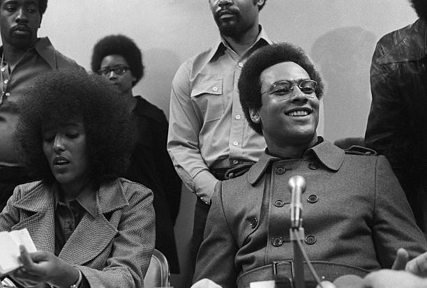
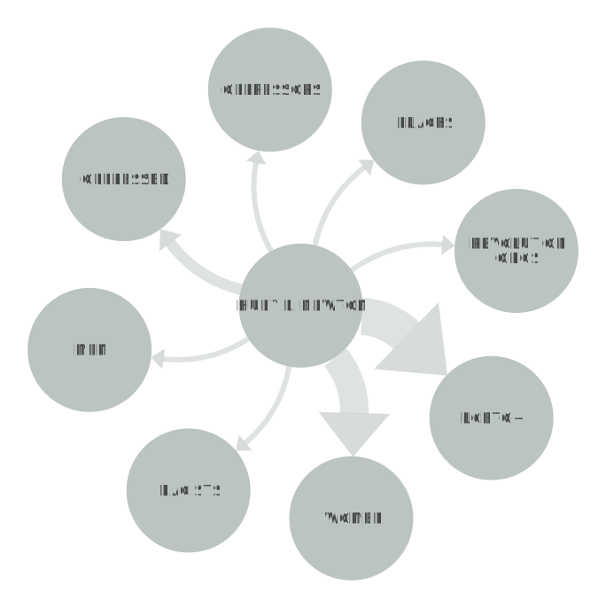

HUEY P. NEWTON
Huey P. Newton was an American activist and revolutionary who co-founded the Black Panther Party with Bobby Seale in 1966. Born in Monroe, Louisiana in 1942, Newton grew up in poverty in Oakland, California. He earned a degree in philosophy from Merritt College and became active in the civil rights movement. As a co-founder of the Black Panther Party, Newton played a key role in developing the party's ideology and organizing its activities. The party was dedicated to protecting Black communities from police brutality and other forms of oppression, and it advocated for the creation of a socialist society based on community control and self-determination.
POSITIVE OR NEGATIVE RHETORICAL ACTION
Newton's speech is mostly policy-driven, and there isn't much action in the context we've used it. Of what's represented, one action (revolution) is active resistance and the other (protests) is nonviolent. Newton was a co-founder of the BPP and he was very, very assertive. Newton's beliefs for how the Black Panthers should act reflect how he feels all minorities and oppressed should act—everyone, Newton encourages, should overlook their differences and push for socioeconomic justice. The struggles of other oppressed groups are similarly tied to the hegemony of a racist, patriarchal, homophobic (or, at the very least, heteronormative) capitalist society that blocks these people from meeting their needs without engaging with those who suppress them.
SPEECH ON: THE WOMEN'S LIBERATION AND GAY LIBERATION MOVEMENTS
In the speech on women's liberation and gay liberation movements, Huey P. Newton addressed the need for the party to be inclusive of all oppressed people, regardless of their gender or sexual orientation. He spoke about the ways in which the struggle for Black liberation was intimately connected to the struggles for women's and gay liberation. He argued that these movements were all part of a larger struggle against the oppressive system of capitalism and imperialism, and he called on the party to actively support these movements.
NETWORK GRAPH
Newton focuses on the oppressed and their potential, rather than the oppressor and their domination. He talks about how women and members of [what we now call] the LGBTQ+ Community, especially those pursuing a similar revolutionary struggle, are to be treated by members of the party: with cautious respect. He speaks on how they can similarly do harm—either in the race or class struggle—and encourages the Party to forge alliances with those who do not cause such harm. In turn, they too must accommodate these other groups by letting women live a public life and not using hateful language towards LGBTQ+ people or claiming that their enemies are.